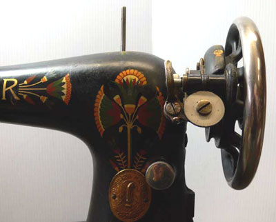
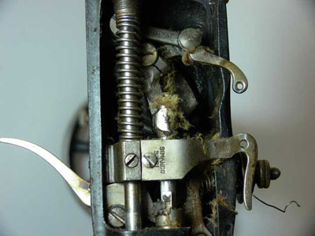
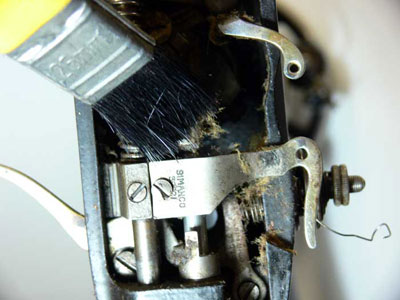
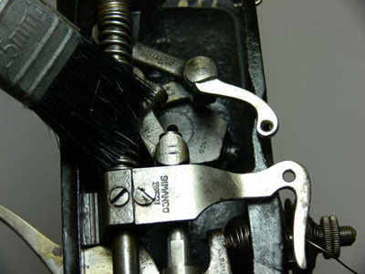
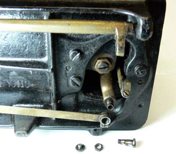
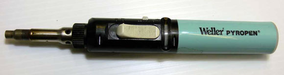
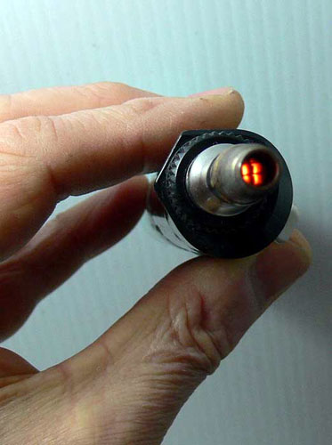
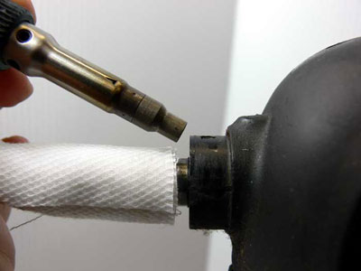
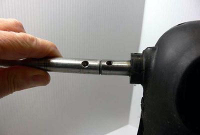
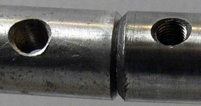

Degrippage Machine
par Les Godfrey
Traduction française Odile Berget
Récemment, nous avons lu plusieurs messages concernant des machines complètement grippées et j'aimerai donc partager avec vous ma méthode de nettoyage et de localisation des problèmes. Imaginez que vous ayez extrait une machine imaginaire de sa base ou de son meuble et qu'elle est posée devant vous, sur votre établi. Prenez un siège, allumez une bonne source de lumière et allons-y.
Face à une machine grippée, il convient d'abord d'être patient, ne vous précipitez pas en allant d'une zone à l'autre, votre approche doit être méthodique. Dans notre scénario, nous ne connaissons pas l'historique de la machine, son usage précédent, la façon dont elle a été entretenue, vous venez juste de l'acquérir.
Étudiez la machine, regardez-là, son apparence générale peut en dire beaucoup sur son passé et sa condition actuelle. A t-on beaucoup travaillé avec, pendant longtemps, est-elle couverte de saletés, de rouille, y a t-il des pièces apparemment tordues? Voyez si le volant tourne librement, est-il bien fixée à 90° de son arbre de transmission? Un coup d'oeil rapide au levier releveur de fil, est-il bloqué contre le corps de la machine? Le pied presseur peut-il se relever? Voyez s'il y a des craquelures, des chocs qui pourraient indiquer que la machine a fait une chute. Le plus vous regarderez, le plus vous verrez (merci Grand-Papa!). Evidemment, dans notre scénario, il y a de la rouille et de la saleté
Il est temps de commencer, ôtez les plaques de la face avant, les plaques d'aiguilles, la plaque de côté, les caches arrières et supérieurs (s'il y en a), ainsi que la courroie du moteur pour une machine électrique, pas de souci à cette étape concernant le nettoyage ou le graissage. Maintenant, ôter les mécanismes de cannette ou de navette, il est possible que le problème soit là. Je sais, c'est ce que vous souhaitez!! Tourner doucement le volant de la machine vers l'avant et l'arrière d'un mouvement oscillant.
Pas
de chance? D'accord, c'est le moment de commencer le nettoyage. D'abord procurez-vous
un récipient, une boîte en plastique de crème glacée
sera parfaite et un pinceau de 25mm dont vous recouperez les poils à
13mm pour qu'ils soient propres et raides. Je recommande le kérosène
[en France - pétrole lampant] comme agent de nettoyage. Il fonctionne
de deux façons, en dissolvant l'huile sale et séchée et
aussi comme lubrifiant . Il est beaucoup moins cher que le WD40 [dégrippant]
et n'endommagera pas les parties peintes lors de l'essuyage. Il convient de
faire très attention lors de l'utilisation du kérosène
ou d'autres liquides inflammables. Pas de panique néanmoins si vous ne
le laissez pas stagner plus longtemps qu'une demi-journée sur la surface
de la machine. Testez éventuellement les réactions de la peinture
ou de l'apprêt sur une zone de surface cachée si vous n'êtes
pas sûr. Versez du kérosène dans votre récipient
sur une hauteur de 25 mm, trempez-y votre pinceau et commencez à récurer
les parties mécaniques de la machine.
Commencez en haut du support d'arbre et dirigez vous vers la gauche, vers la barre d'aiguille, le support d'aiguille, le pied presseur et le releveur de fil. Je manoeuvre généralement le volant pendant tout ce nettoyage, d'une part pour tester le mouvement et d'autre part pour faciliter l'infiltration du kérosène dans et entre les pièces. Cela peut faciliter le dégrippage. Ensuite, occupez vous du régulateur de longueur du point puis des sections basses de la machine en partant du crochet rotatif ou du support de navette; travaillez soigneusement le long de l'arbre inférieur et du mécanisme d'enfilage.
Commencer par les parties supérieures permet d'accélérer le processus puisque le kérosène va couler vers le bas en commençant à dissoudre les saletés. Une fois le nettoyage général terminé, vous pouvez vous concentrer sur les parties rouillées décelées lors de la première inspection. Le kérosène devrait aider rapidement à sa dissolution. Ces morceaux nécessiteront sans doute un peu de travail supplémentaire par la suite si elles sont vraiment piquées de rouille.
A partir de maintenant la machine devrait heureusement commencer à fonctionner plus librement même si le mouvement est encore dur. A ce point, remettre sur la machine entière une bonne dose de kérosène propre et commencez à tourner le volant d'un sens et de l'autre; ne forcez jamais le mouvement, le volant à main a la force nécessaire pour la mise en mouvement. Rappelez-vous à ce point que nous ne savons pas s'il y a d'autres problèmes qui ont causé le grippage et que nous en sommes seulement à la première phase de la procédure. Si vous venez de passer du temps à essayer en vain de débloquer cette machine, arrêtez là, essuyez toutes les parties peintes avec un chiffon sec, nettoyez votre établi et laissez le kérosène faire son job!
Allez faire une pause, une tasse de café ou de thé, un bon repas, bref, prenez un bon moment. Pas la peine de continuer sur le champ ce qui est frustrant si vous n'arrivez à rien.
Une fois la pause terminée, reprenez votre inspection. Eh bien, ça commence à bouger lentement mais sûrement, cela va certainement s'améliorer, continuez doucement; ça y est, vous y êtes!
Bon, nous avons été trop optimistes et ça ne va pas mieux, désolé pour les faux espoirs, mais c'est le moment de reprendre votre inspection en tournant de nouveau le volant et en observant s'il y a néanmoins une amorce de mouvement. Si c'est la soirée, appliquez encore une dose de kérosène et laisser la nuit passer, ce n'est pas une opération qu'il faut précipiter.
Si le traitement n'a pas eu d'effet pendant la nuit, alors il y a un gros problème ce qui rend le challenge encore plus agréable; restez positif! Ne forcez rien, ne sachant pas où est le problème, forcer pourrait faire empirer les choses. Une nouvelle inspection du volant et une petite prière n'ont rien donné! D'accord, passons à la phase 2.
Tout ce qui a été précédemment tenté n'a pas eu de succès. Dans ce cas, le moyen le plus rapide pour localiser le problème est de désolidariser les mécanismes supérieurs et inférieurs. Cela devrait préciser le champ de recherche. On le fait en déconnectant les assemblages, tringles, arbres et courroies qui relient les deux parties de la machine. C'est plus facile à réaliser à partir du bas que du haut de la machine. A partir de là, vous devriez voir si le problème se situe en haut ou en bas, l'un des deux fonctionnant généralement bien et pas l'autre, cela diminue de 50% notre zone de recherche.
Si le problème se situe en partie haute, regardez d'abord l'arbre et ses paliers puis la barre d'aiguille et le releveur de fil. N'étant sûr de rien, il faut bien commencer par un bout en désolidarisant la barre d'aiguille: tenez la bride de serrage d'aiguille, et tournez ou dévissez la barre en essayant le la faire monter ou descendre. Si elle ne bouge pas, c'est probablement là que réside le problème. Si la barre d'aiguille ne bouge pas est-ce que le reste fonctionne? Si c'est dégrippé à cet endroit et que le reste ne fonctionne pas, bingo, on continue!
Quoi qu'il est soit, si le mécanisme supérieur ne fonctionne pas, c'est qu'il y a un problème supplémentaire. D'abord il faut arriver à libérer ce mécanisme puis nous nous concentrerons sur la barre d'aiguille. Laissez les assemblages lâches et manoeuvrez de nouveau le volant après une nouvelle application de kérosène. Si cela n'a pas d'effet, faites une autre pause pour éviter la frustration à tout prix. A cette étape les problèmes se compliquent et peuvent nécessiter d'autres démontages et de nouveaux tests. Il faut isoler l'arbre supérieur, démonter le levier releveur de fil de la manivelle, et tester s'il fonctionne librement. Maintenant il ne reste que l'arbre à se déplacer dans ses paliers et si le kérosène n'a pas eu d'effet c'est le moment de procéder d'une nouvelle manière.
C'est parti pour l'étape 3. Lors de notre examen du départ, tout semblant aligné, il n'y a pas de signe que l'arbre ait été déplacé. Nous avons donc maintenant deux méthodes pour faire évoluer les choses : la chaleur et le choc. La chaleur sera mon premier choix, dans le cas d'une machine grippée par manque de fonctionnement, cela sera efficace alors qu'il n'en sera rien si une pièce est tordue ou désalignée.
Comment faire pour chauffer, j'utilise personnellement un petit fer à souder Weller à gaz. Avec une buse à la place de la panne du fer, cela crée un point chaud de la taille d'une pointe de crayon. Je sais que d'autres ont utilisé avec succès un sèche-cheveux. Cela indique qu'une chaleur seulement modérée est nécessaire et qu'il n'est pas utile d'aller jusqu'au métal rouge! Est-ce que la chaleur fait avance les choses? Elle dilate le métal et aide à rompre les lien entre deux surfaces.
Commencez par chauffer le dessus de l'arbre des deux côtés des paliers juste assez pour que ce soit chaud et non brûlant, appliquez un peu de kérosène ou de dégrippant WD40 si vous préférez, sur les paliers et faites manoeuvrer le volant. Avec un peu de chance ça fonctionne. Si vous n'y arrivez pas, recommencez. Toujours pas de succès : appliquez un chiffon mouillé autour de l'arbre et appliquer la chaleur directement sur les paliers. En dilatant seulement les paliers, cela peut permettre au kérosène de s'infiltrer entre les deux surfaces pour les décoller. Soyez sûr que les chiffons restent bien mouillés pour éviter à l'arbre de chauffer.
Si vous décidez d'employer le choc, vous avez besoin d'un vieux manche d'à peu près 13 mm. Le meilleur moyen est d'avoir un moyeu d'une taille aussi proche que possible de la partie sur laquelle vous allez travailler mais pas plus grosse. C'est une méthode à employer en dernier ressort et avec grande prudence. Il faut appliquer un coup sec sur l'arbre ce qui doit être fait plutôt du bout du volant et non de l'autre côté. Enlevez le volant, appliquez votre manche au bout de l'arbre en étant bien aligné, toute la surface devant recevoir également le choc. Donnez un coup de marteau sec, pas question d'utiliser un marteau de forgeron! Un marteau normal suffit.
Je doute que vous ayez à utiliser cette méthode mais combinée à la chaleur, cela peut se révéler utile.
Si le problème se situe en partie basse, vérifier tous les engrenages, les accouplements et les entraînements pour déceler les zones grippées. Faites-le pour toutes les zones inférieures de la même façon que vous avez travaillé sur le haut. En travaillant de la sorte vous devriez trouver et résoudre la majeure partie des problèmes. Il y a tant de scénarios aux causes multiples que je ne peux les énumérer ici. Un nettoyage profond et complet tel que je l'ai indiqué réussi à dégripper 95% des machines, même les plus réfractaires.
Prenez votre temps, ne vous précipitez pas, n'espérez pas y arriver en deux temps trois mouvements. Même s'il arrive que cela se fasse très rapidement, n'oubliez pas qu'il a fallu des années à la machine pour en arriver à ce point. En fonction des problèmes à résoudre on peut en arriver à devoir utiliser le perçage pour résoudre les choses.
Une chose importante : lorsque vous démontez une machine, alignez toujours correctement les vis, boulons, écrous surtout si vous n'êtes pas familier de ce genre de démontage. Vous risqueriez d'avoir un trou de mémoire lorsque le temps du remontage sera venu.
J'espère que ce message vous aura aidé et vous aura donné confiance pour vous attaquer à ce type de réparations.
Cordialement
Les
(c) Les Godfrey 2008
Traduction : Odile Berget, septembre 2008